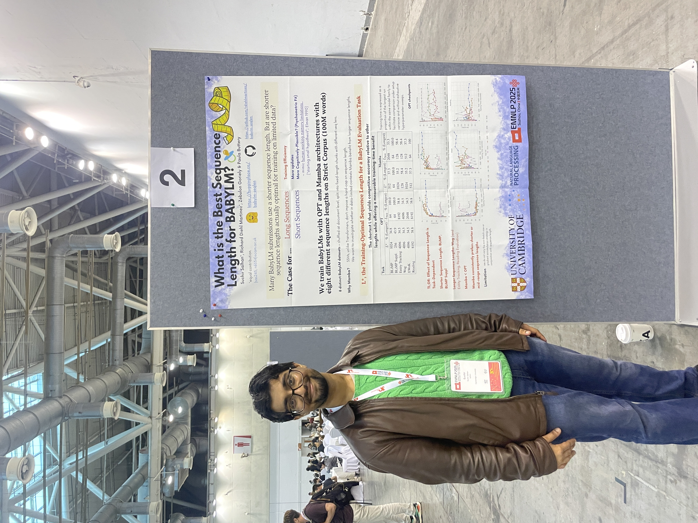
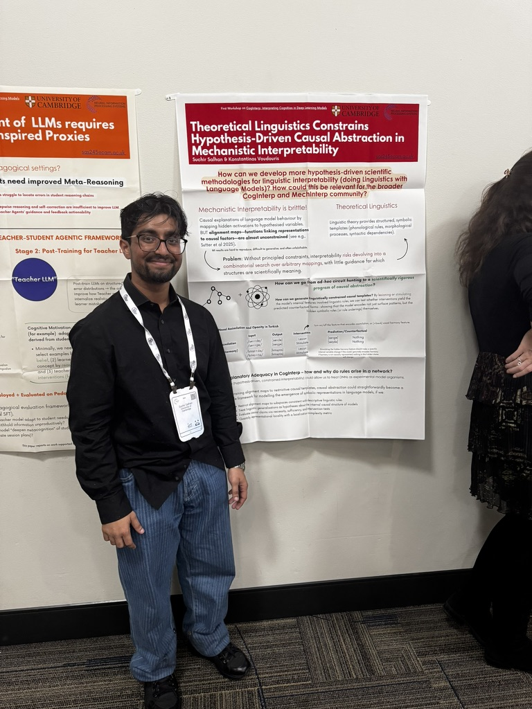
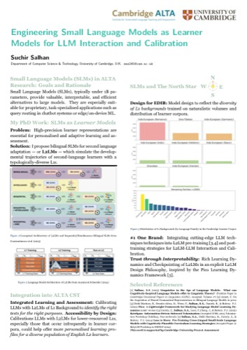
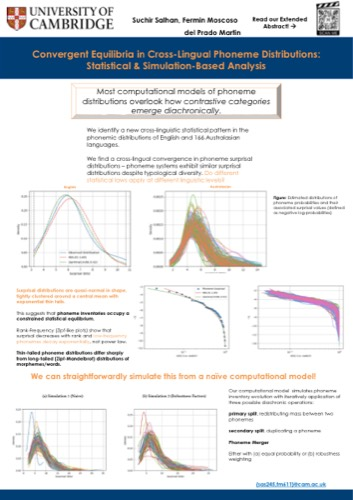
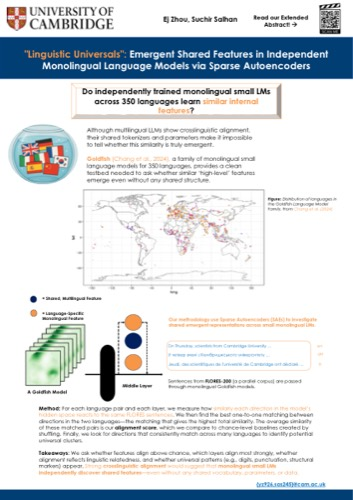
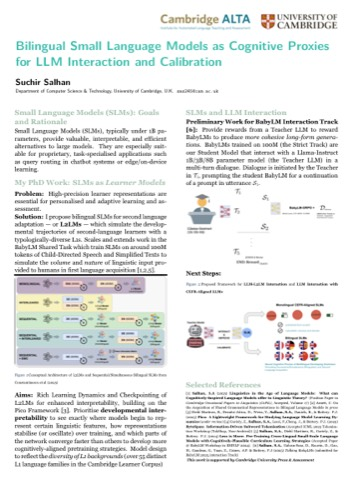

Talks & Presentations
Presentations, Posters & Invited Talks
Talks and posters on how intelligence emerges in minds and machines: slides and keynotes, conference and workshop posters, and a full list of invited talks & seminars.
Slides & Keynotes
Invited Talk & Conference Slides
Presentation decks from conference talks and invited keynotes.
Posters
Conference & Workshop Posters
Posters presented at conferences, workshops and departmental showcases.


ACL 2025 Poster
Measuring Grammatical Diversity from Small Corpora — ACL 2025 Main Conference, Vienna.

BabyLM (EMNLP) Poster
BabyLM Workshop, EMNLP 2025 — human-scale language modelling, Suzhou.

BabyLM Sequence-Length Poster
What's the Best Sequence Length for BabyLM? — BabyLM Workshop, EMNLP 2025.

CogInterp @ NeurIPS Poster
NeurIPS First Workshop on CogInterp: Interpreting Cognition in Deep Learning Models, 2025.

CogInterp @ NeurIPS Poster (II)
Second CogInterp @ NeurIPS 2025 poster — theoretical linguistics & causal abstraction.

Pico / MAML @ MRL Poster
Meta-pretraining for zero-shot cross-lingual NER — MRL Workshop, EMNLP 2025.

ALTA Annual Review Poster
ALTA Institute Annual Review 2025 — small language models & language learning.

Cambridge Language Sciences Poster
Cambridge Language Sciences showcase — phoneme distributions (with F. Moscoso del Prado Martín).

Cambridge Language Sciences / MRL Poster
Cambridge Language Sciences — multilingual representation learning abstract.

LHI Expo Poster
Learning & Human Intelligence Group Expo — small-scale language models.

Invited Talks & Seminars
Invited Talks & Seminars
Selected talks, keynotes, and seminar presentations. I also organise the NLIP Seminar Series at Cambridge — see Service.